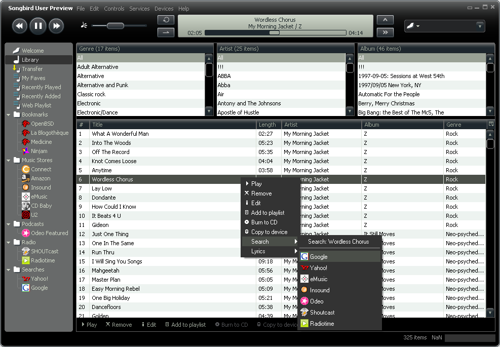
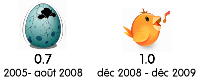
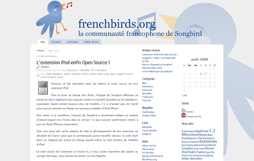

Cet article à été rédigé par mes soins en janvier, corrigé et relu par Goofy.
Petit retour en arrière, avant d'avoir découvert Songbird...
J'ai utilisé dans l'ordre Windows Media Player (il y a fort longtemps), Winamp,
musikCube et Amarok. Avec musikCube j'ai découvert un logiciel Open Source, avec une communauté de plus en plus active. Le logiciel correspondait à mes attentes : léger, rapide, pratique pour éditer les méta-données, personnalisable grâce à des plugins, compatible Last.fm… seulement petit point faible : le logiciel était en anglais et aucune traduction française n'a été faite auparavant. Je me suis donc lancé avec quelques outils pour traduire ce logiciel, à savoir Resource Hacker et NSIS pour
faire un patch.

J'ai ensuite été actif sur le forum pour aider les utilisateurs et j'ai aussi fait découvert le logiciel aux francophones. Seulement en 2005, après une version 1.0 le développeur principal (
Casey Langen) à été embauché à Amazon et son contrat de travail l'empêchait de continuer le développement de logiciels personnels. A l'époque de musikCube, quelqu'un a posté un lien vers le projet Songbird, le projet était en version 0.1 et je me souviens que plusieurs sites dont Clubic ont fait
une news pour annoncer un nouveau lecteur audio révolutionnaire… Pour avoir testé cette version, c'était loin d'être génial : plantages, lent, peu de fonctions.

J'ai continué à utiliser musikCube un bout de temps puis entre août 2007 et novembre 2007 pendant ma période Ubuntu j'ai utilisé Amarok mais je n'ai pas accroché à l'interface. Après novembre j'ai eu une nouvelle configuration et je suis repassé sur Windows (principalement pour les jeux). Je ne sais plus comment mais je suis retombé sur Songbird, le logiciel avait évolué, et j'ai essayé la version 0.4, j'ai commencé à l'utiliser en gardant musikCube, puis le logiciel m'a séduit.
Songbird est le Firefox des lecteurs multimédias
Enfin Songbird vint...
J'utilisais déjà Firefox, notamment depuis la version 1.0 (un ami me l'avait fait découvrir en version 0.1). Pourquoi cette analogie à Firefox ? Firefox et Songbird sont tout les deux des projets Open Source reposant sur le même moteur.
La première chose que j'ai trouvé géniale était le fait de pouvoir installer des extensions comme pour Firefox. Ça tombe bien, POTI la société responsable du développement du logiciel organisait
un concours pour “porter” les extensions Firefox les plus utilisées pour fonctionner sur Songbird (depuis la majorité des extensions ayant participé à ce concours ne sont plus supportées mis à part les miennes). J'ai un peu regardé mais à l'époque mes connaissances en développement étaient plutôt faibles, bonne surprise : La procédure était plutôt simple.
En changeant, 2 ou 3 lignes l'extension Firefox fonctionnait très bien sur Songbird ! Merveille j'avais ma première extension :) J'ai ensuite continué à porter quelques extensions qui m'intéressaient, puis j'ai regardé comment fonctionnait une extension en général. En modifiant certains fichiers, j'ai commencé à comprendre comment fonctionnait le système. Ce système étant commun à Mozilla, j'ai découvert un monde tout nouveau. J'ai commencé ma première véritable extension :
LiveTweeter permettant d'afficher ce que l'on écoute sur Twitter mais aussi MSN/Windows Live Messenger.
Pendant ce temps Songbird évoluait, doucement mais sûrement. Les développeurs étaient très à l'écoute de la communauté. Avec la version 0.7 on a eu le droit à un nouveau thème :
Gonzo Certains ont crié au scandale à cause des ressemblances avec iTunes. Pour moi c'était plutôt une bonne chose, certains éléments prenaient moins de place, le thème était plus clair, accessible. Le projet avait enfin atteint le stade bêta. Sur le blog on avait le droit tous les mois à des illustrations réalisées par le designer
Jonathan Koshi pour agrémenter les news. D'autre initiatives étaient intéressante comme le
sb_core qui consistait à faire gagner des prix aux contributeurs en se basant sur le nombre de bugs corrigés. Sur leur blog nous avons aussi eu le droit à
des documents sur la façon de développer de l'équipe.
Une version 1.0 est sorti fin 2008 avec notamment l'utilisation de
GStreamer pour la lecture audio (pour remplacer l'ancien moteur basé sur VLC qui était trop gourmand en ressources.) et les performances ont été améliorées. Jusqu'à la version 0.7 l'icône de Songbird était un oeuf craquelé qui laissait apparaître l'oiseau noir dessiné par Jonathan Koshi… seulement avec cette 1.0 (mauvaise surprise ?) un nouvel oiseau orange à fait son apparition à la place du logo. Je pense que c'était un mauvais choix… en effet comment reconnaître l'oiseau du logiciel de celui du site ? La raisons du changement était que l'icône n'était pas vraiment visible/reconnaissable par rapport à d'autre logiciels.

Partenaires et problèmes...
Puis le rythme s'est accéléré… la version 1.1 sortie en mars 2009 à apporté la fonctionnalité permettant de “surveiller un dossier” (fonction qui me manquait depuis musikCube quand même !) Un premier partenaire est aussi venu se glisser :
7Digital, un portail pour acheter de la musique sans DRM et en bonne qualité (jusqu'à 320kbps). Bonne initiative pour concurrencer Apple et pour apporter de l'argent à POTI : Pour chaque morceau acheté via Songbird, l'équipe de développement touche un pourcentage. L'extension permettant la prise en charge des iPods a ensuite eu quelques ratés qui ont été corrigés rapidement.
Entre temps, Goofy (
BabelZilla,
Frenchmozilla,
Framablog),
NeX (
Paris-Web,
MixThem), Thain (étudiant Miage,
BirdQuizz) et moi-même avons créé
Frenchbirds, un blog francophone pour parler du logiciel et des extensions avec notamment des tutoriels et news.

La version 1.2 est sortie en juin 2009, apportant un égaliseur (enfin me direz vous ! Je l'avais dans mon musikCube aussi) la gestion automatique des fichiers et l'import/export vers iTunes (l'équipe de Songbird ne voulant pas continuer à prendre en charge l'extension iPod avec laquelle ils ont eu du mal). C'est cette version que j'ai présentée aux
RMLL à Nantes au stand Mozilla pour mon premier salon sur le logiciel libre :)
Depuis
cette version, l'équipe de développement a eu plusieurs problèmes : -au terme du développement de la version 1.3 prévue pour Août, un bug important empêchait l'utilisation des baladeurs aux protocoles MTP. La version était quand même terminée et répondait au cahier des charges prévus c'est à dire de prendre en charge les périphériques USB sur Windows. Oui j'ai bien dit Windows, même si Songbird est multi-plateformes il n'en reste pas moins que certaines de ses extensions ne fonctionnent que sur certaines plate-formes, POTI privilégiant Windows pour la majorité des clients.
C'est alors que le développement de la version 1.4 a débuté, elle devait prévoir l'extraction de CD audios mais toujours pareil, le temps passait et aucune version officielle ne sortait. Eh oui, depuis Août 2009 j'ai découvert “malencontreusement” des fichiers bizarres… je cherchais des explications auprès des développeurs, certains me parlaient de support pour de nouveaux baladeurs, puis d'un partenariat encore secret. Après avoir ouvert ces fichiers dans mon éditeur hexadécimal je découvre une chaine de caractère “Philips” ! On m'a bien sûr demandé de garder le secret. (Cela peut paraitre étrange venant d'un logiciel Open Source). En fait Songbird n'est pas tout à fait Open Source. La base du logiciel est bien en
tri-licence (Licences identiques à celle de Firefox) mais certaines extensions ne le sont pas, alors que ce sont des briques importantes du logiciel (Gestion des périphériques et extraction de pistes audios entre autre)
La version 1.4 était en fait développée tout d'abord pour
Philips, (“Partner release”). Est venue ensuite la version 1.4.1, une version introduisant un nouveau thème. Pareil, j'ai été informé de ce nouveau thème début octobre mais l'on m'a demandé de ne rien révéler (alors qu'aucun partenaire n'était en jeu). Ce nouveau thème violet permet maintenant de se différencier du logiciel d'Apple. Cette sortie s'est encore accompagnée de problèmes : certains utilisateurs ont eu un bug d'affichage lié au passage au nouveau thème. Puis encore une erreur liée à l'EULA qui ne s'affichait pas. Du coup on en arrive à une version 1.4.3 qui sort peu avant 2010. Aucune mise à jour dans le logiciel n'a été proposée directement à la sortie de cette nouvelle version, il a fallu attendre plusieurs semaines (les fêtes de fin d'année) pour voir arriver une mise à jour pour les utilisateurs de la version 1.2 (avec la gestion de fichiers/dossiers qui est catastrophique).
Aujourd'hui une forte communauté (en plus de l'équipe de développement qui est payée) fait vivre le logiciel. En effet il existe une multitude d'extensions et de thèmes disponible. Seulement nous sommes de moins en moins écoutés,
POTI privilégiant les partenaires qui eux, payent bien. Beaucoup de problèmes restent en suspens et ne risquent pas d'être traités tout de suite. Je ne vais pas tous les citer, les problèmes majeurs pour moi les extensions majeures qui ne sont pas Open Source (comme indiqué précédemment) et que l'expérience n'est pas la même sur les 3 systèmes d'exploitation. Les utilisateurs Windows sont clairement privilégiés devant Mac OS X et Linux. D'une autre part il est aussi difficile de participer à certains processus de développement (contrairement à Mozilla). Les outils (traduction en ligne et site d'extensions) ne sont pas Open Source, impossible de les faire évoluer pour nos besoins. Certains bugs et répertoires du code source sont privés. Impossible d'y avoir accès si l'on ne travaille pas là-bas. Nous essayons de faire évoluer Songbird, mais nous sommes encore trop limités pour en faire le lecteur multimédia idéal.
Projet...
D'où cette idée folle que nous avons eue de “forker” Songbird, c'est-à-dire de partir du logiciel actuel et d'en faire un autre logiciel. L'idée n'est pas de concurrencer Songbird, loin de là. Nous travaillerons toujours ensemble et l'ensemble des extensions et des thèmes fonctionnera sur les 2 logiciels. L'idée est d'améliorer l'expérience de l'utilisateur en proposant des versions avec un cycle plus court et en proposant par défaut des fonctions déjà réalisées par la communauté). Notre “Songbird” sera égal sur toute les plate-formes et l'ensemble du code sera Open Source.
Nous avons déjà commencé à réaliser un
cahier des charges pour notre version.


Commentaires 5